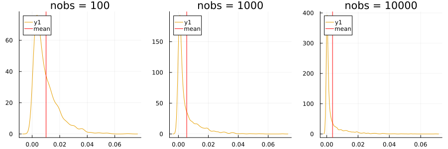

Finite-sample Correction
We follow the convention used in Angelopoulos and Bates (2021) and Barber et al. (2021) to correct for the finite-sample bias of the empirical quantile. Specifically, we use the following definition of the (1−α) empirical quantile:
\[\hat{q}_{n,\alpha}^{+}\{v\} = \frac{\lceil (n+1)(1-\alpha)\rceil}{n}\]
Barber et al. (2021) further define as the α empirical quantile:
\[\hat{q}_{n,\alpha}^{-}\{v\} = \frac{\lfloor (n+1)\alpha \rfloor}{n} = - \hat{q}_{n,\alpha}^{+}\{-v\}\]
Below we test this equality numerically by generating a large number of random vectors and comparing the two quantiles. We then plot the density of the difference between the two quantiles. While the errors are small, they are not negligible for small n. In our computations, we use q̂(n, α)⁻{v} exactly as it is defined above, rather than relying on − q̂(n, α)⁺{ − v}.
using ConformalPrediction: qplus, qminus
nobs = [100, 1000, 10000]
n = 1000
alpha = 0.1
plts = []
Δ = Float32[]
for _nobs in nobs
for i in 1:n
v = rand(_nobs)
δ = qminus(v, alpha) - (-qplus(-v, 1-alpha))
push!(Δ, δ)
end
plt = density(Δ)
vline!([mean(Δ)], color=:red, label="mean")
push!(plts, plt)
end
plot(plts..., layout=(1,3), size=(900, 300), legend=:topleft, title=["nobs = 100" "nobs = 1000" "nobs = 10000"])
See also this related discussion.
References
Angelopoulos, Anastasios N., and Stephen Bates. 2021. “A Gentle Introduction to Conformal Prediction and Distribution-Free Uncertainty Quantification.” https://arxiv.org/abs/2107.07511.
Barber, Rina Foygel, Emmanuel J. Candès, Aaditya Ramdas, and Ryan J. Tibshirani. 2021. “Predictive Inference with the Jackknife+.” The Annals of Statistics 49 (1): 486–507. https://doi.org/10.1214/20-AOS1965.